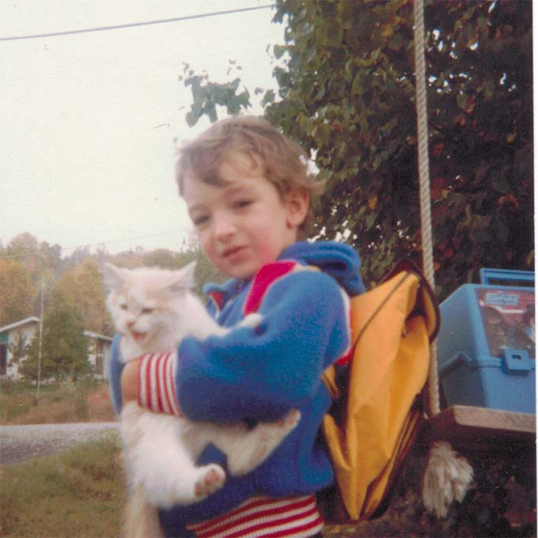
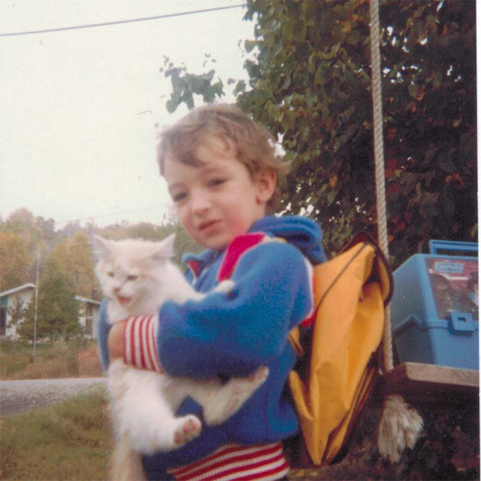

- Skip to Navigation
- Skip to Main Content
- Skip to Email Marky Dee Button
- Skip to French Language Toggle Button
About Me
Believe it or not, this exact phrase popped into my head right in the middle of an early morning jog back in August 2020 and I quickly emailed it to myself right in the middle of the run so that I wouldn’t forget.

I want to see more beauty and understanding in the world.”
It was a literal flash of inspiration and I have since come to think of it as a serendipitous moment of discovering my individual WHY or personal mission statement!
My Story Timeline
 
